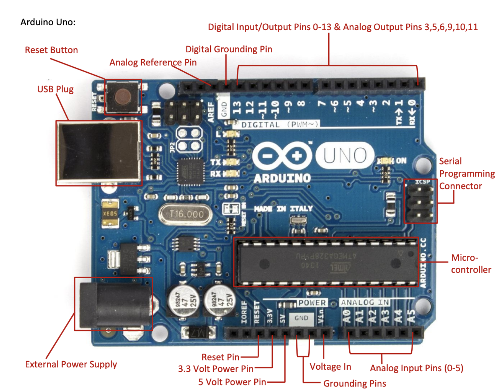

Workshop Activity: Blink Buzz Vroom
Arduino Prototyping Basics
Working in Pairs – Tinkercad Model
- Build your first circuit
- Build your second circuit
Arduino Live Coding Demo
We followed a live demo to:
- Set up the Arduino IDE and board
- Understand the anatomy of an Arduino sketch
Arduino Circuit Build (Week 8 Intro Pic)

Diagram of Arduino Uno Board
What I Learnt from this Activity
Arduino Setup
- How to install the Arduino IDE
- How to connect your Arduino Uno board to your computer
- How to select the correct board and port
- How to upload code from the IDE to the board
Arduino Sketch Structure
void setup() {
// runs once
}
void loop() {
// runs forever
}Similar to p5.js, Arduino sketches have setup() and loop() functions:
setup()is for initial setup likepinModeloop()is for repeating actions like blinking an LED
Issue We Faced
At first, no matter how many times we tried running the code, it didn’t work. We later realised it was essential to:
- Set up the correct Uno board and port in the Arduino IDE
- Install the required libraries such as
IRremote.h